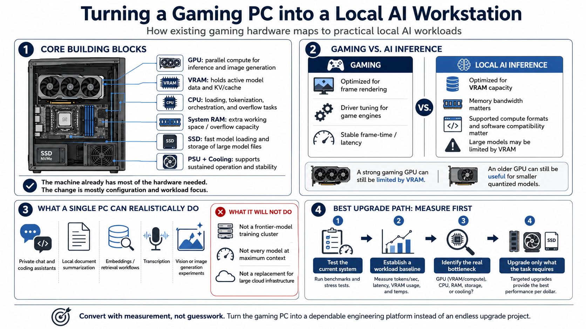

Why Gaming PCs Make Good AI Workstations
Connecting to LMS... Progress: in progress

Narration
A modern gaming PC already contains most of the building blocks needed for useful local artificial intelligence. The graphics processor supplies highly parallel compute, video memory holds active model data, and the CPU coordinates loading, tokenization, storage, and tasks that do not fit on the GPU. System memory provides overflow capacity, an SSD moves large model files quickly, and the power supply and cooling system support sustained operation. Converting the machine is therefore less about replacing its identity and more about configuring the hardware for a different workload.
Gaming benchmarks and AI inference benchmarks measure different things. A game rewards fast frame rendering, driver optimization for specific engines, and stable latency. Local inference rewards memory capacity, memory bandwidth, supported compute formats, and software compatibility. A GPU that produces excellent frame rates can still be constrained by limited VRAM when loading a large language model. Conversely, a card that is no longer at the top of gaming charts may remain useful for smaller quantized models, embeddings, transcription, or image generation.
Set realistic expectations. A single gaming PC can run private chat and coding assistants, summarize local documents, generate embeddings, support retrieval workflows, and experiment with vision or image models. It will not automatically match a large cloud cluster, train frontier models, or run every model at its maximum context length. The practical target is a dependable workstation that fits selected workloads, keeps sensitive data under local control, and produces acceptable speed without destabilizing the machine.
The best conversion starts with measurement rather than shopping. Learn what the current system can run, establish a baseline, and identify the component that actually limits the desired task. That approach turns an existing gaming machine into an engineering platform instead of an endless upgrade project.